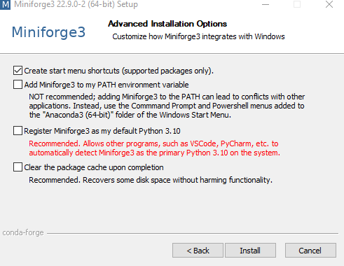
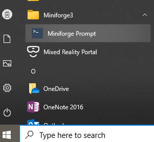
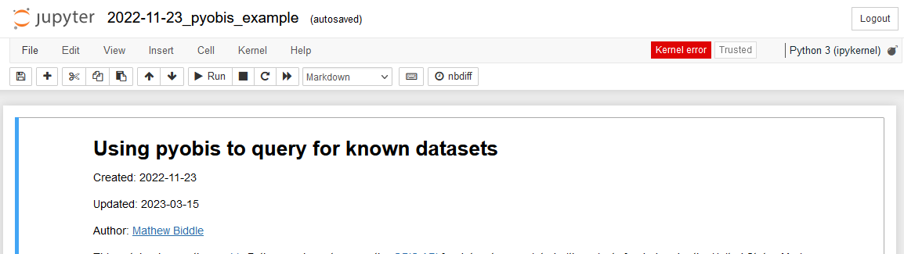

Installing the IOOS conda environment#
For IOOS Python/R/Julia users we recommend the free
Miniforge distribution,
a lightweight version of the Anaconda Scientific Python Distribution with the conda-forge channel pre-configured.
While the full Anaconda distribution will also work,
it is faster to install Miniforge and you can install only the packages you need.
If for some reason you decide later that you want the full Anaconda distribution,
you can install it by typing conda install -c defaults anaconda.
Note that if you have the Anaconda Distribution, or any other installation, in your machine you may want to follow these uninstall instructions before proceeding.
Install#
Download and install the appropriate Miniforge3 installer for your platform.
Windows#
Download it from conda-forge/miniforge.
Run the installer
Choose Just Me (not All Users),
and choose a install location owned by you.
The default is fine but kind of long.
We recommend something on your C drive like C:\Miniforge.
On the “Advanced Installation Options” screen, uncheck the boxes to make Miniforge your default Python to avoid conflicts with any existing installation.

Linux/macOS#
Copy-and-paste this in the terminal:
curl -L -O "https://github.com/conda-forge/miniforge/releases/latest/download/Miniforge3-$(uname)-$(uname -m).sh"
bash Miniforge3-$(uname)-$(uname -m).sh
and use all the default options,
except for the license agreement where you must actively change it to yes.
Create the IOOS conda environment#
Download the environment.yml,
or the environment-python_and_r.yml for a bigger environment with the R packages,
by right clicking with the mouse and choosing save as...,
or, on macOS and Linux, use these commands to download:
url=https://raw.githubusercontent.com/ioos/ioos_code_lab/main/.binder/environment.yml
curl $url -o environment.yml
Open the Miniforge Prompt by click on the icon below:

or open the Linux/macOS terminal.
Then, from the directory where you saved the file above, type the following command to update the packages in your base environment,
conda update --yes --all
and
conda env create --quiet --file environment.yml
to create the IOOS environment locally. Change the file name to environment-python_and_r.yml if you chose to use the IOOS environment with R.
That will update the packages in your base environment and then install the IOOS environment. This will trigger the download and installation of many packages, you should probably go get a coffee.
Once the environment is done building, you can activate it by typing:
conda activate IOOS
Now you can start hacking the notebook with jupyter nbclassic,
for the old style notebooks,
or jupyter-lab for the new IDE interface.
Exiting the IOOS environment#
If you want to leave the IOOS environment and return to the root environment, you can type
conda deactivate
Updating the IOOS environment#
To update an existing environment you can do,
conda activate IOOS
conda update --all --yes
Sometimes that operation can be slow if you have a really old version of the environment, or even impossible to update due to package conflicts. In that case we recommend removing and re-creating the environment. To remove an existing environment you have to run:
conda env remove --name IOOS
and follow the instructions from above to re-create. Note that you don’t need to re-install Miniforge. Just download a fresh version of the environment file and re-create it.
Why we use and recommend conda#
Conda users can just conda install,
which installs not only binary packages for their platform,
but the binary libraries they depend on.
So it’s easier than pip install and, thanks to binary relocation,
more powerful than python wheels.
System-level installation of libraries and admin privileges are not required.
Check out Travis Oliphant’s blog piece for more info.
How to get help#
Raise an issue here
Please get help on the IOOS-tech Google Group
Appendix#
What to do when everything seems to be broken?#
For example, if you are seeing kernel errors like the one below.

If you believe that only your environment is broken you can follow the update environment instructions from above;
Sometimes conda updates can break backwards compatibility and updating is broken. In those cases remove the Miniforge3 directory and perform a fresh install of the new version.
In rare cases you may want to install a frozen version of the environment. Like, you need the exact same version that is running on our CIs. You can accomplish that by downloading the lock file and issuing the command:
conda create --name IOOS --file .binder/conda-lock.yml
conda-lock#
Locking environments can be useful for reproducibility, Continuous Integration (CI), or when one requires faster installation. The reason is because a locked environment saves the “solved” list of packages and only downloads them. Making it much faster than creating from the environment file, and ensuring that the same packages from the time you locked will be used.
To lock an environment you will need to install conda-lock,
conda install conda-lock
then execute the locking command targeting the environment file you want to lock and the platforms, like:
conda-lock -f environment.yml -p osx-64 -p linux-64 -p win-64
In the example above we are locking for macOS, Linux and Windows.
Trouble-shooting Windows#
Windows can be complicated and here are a few tips to help you troubleshoot it:
If you did not install Miniforge on your C:\ drive you may have a “long path error.” Usually that happens when you see failures in the environment creation;
Installation is “successful” but nothing was installed. Please see ContinuumIO/anaconda-issues#6258 for some reasons to why that us happening. Most common ones are aggressive anti-virus or bank apps blocking the installation;
Installation was successful but calling
jupyter nbclassicjust hangs while “waiting for localhost:” that is probably a firewall setting blocking the notebook or you need to update your packages. See update environment.